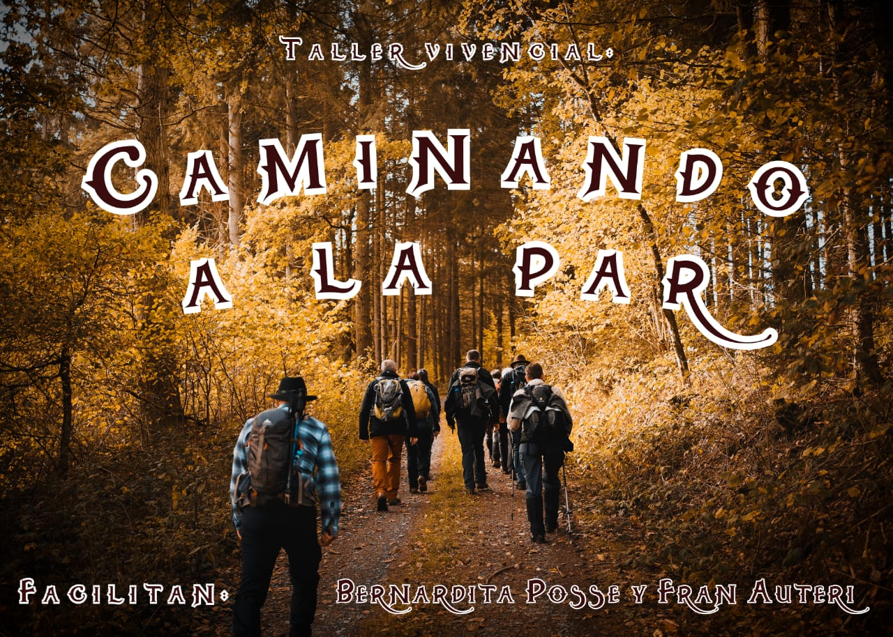

PROXIMOS EVENTOS
Caminando a la par
Te invitamos a este taller vivencial, de enfoque holístico que vamos a estar compartiendo! Para todas las edades, y es tanto para personas experimentadas, como para quienes están viviendo sus primeros pasos sobre estos caminos! Vamos a estar brindandote conocimientos, herramientas y experiencias! Poniendo a tu alcance información basada en conocimientos y sabiduría de culturas ancestrales, conocimientos científicos ( Neurociencias, Biología, Psicología y más ), e integrando técnicas de diferentes disciplinas (P.n.l., Reiki, Sanación, Biodescodificación, y más), todas seleccionadas y orientadas al tan especial propósito de realizar SABIAMENTE un recorrido interno, a través del pasado, del presente, y también del futuro! 💫Este "Caminando" (como los próximos), será siempre un estar TRANSITANDO EN EQUIPO un camino de SANACIÓN, CRECIMIENTO Y EXPANSIÓN! Y más también!💫 🔹️Encuadre y a que apuntamos: Desde nuestro punto de vista, vamos a estar considerando a la persona como una "suma de partes internas" y la suma de diferentes "campos" o "cuerpos", que van desde lo más sutíl, a lo más terrenal. ⚡Los conocimientos y tecnicas que utilizaremos están dirigidas a cada una de estas "partes", "campos" y "cuerpos"⚡ 🔹️A esto nos comprometemos y estaremos haciendo con nuestras capacidades a lo largo del taller: - Estableceremos contacto entre nuestras partes internas, con el propósito de resolver y liberarnos de viejos asuntos, 'poniendo al día las cuentas' y creando nuevos acuerdos entre nuestras partes. - Eliminaremos memorias de dolor, enojo (entre otras), nos despojaremos de algunas creencias limitantes, o representaciones degenerativas grabadas en la psiquis (y nuestra biología). - Crearemos nuevas creencias y representaciones, que nos permitan acercarnos a nuestros propositos y metas. - Armonizaremos y re-sintonizaremos nuestra frecuencia (Sanación Energética). - Brindaremos herramientas y tecnicas de meditación, sanación y empoderamiento, para que te lleves con vos y utilices en tu casa, o le compartas a tus seres queridos!
11 de Junio
Caminando mi interior
Te invitamos a compartir este taller vivencial, que apunta, entre otras cosas, a OPTIMIZAR NUESTRA MANERA DE VINCULARNOS! Te acercamos esta nueva propuesta, con información, conocimientos y vivencias seleccionadas y dirigidas a ampliar, mejorar y enriquecer la forma de entender y de transitar CUALQUIER TIPO DE RELACIÓN O VÍNCULO (sea de pareja, laboral, de equipo, sociedad, etc.). Ampliaremos conciencia sobre: - Para qué me vinculo - Con qué propósito - De qué manera me comunico - Desde qué lugar me posiciono - Cuándo y cómo es mejor relacionarme Aprenderemos cómo hacer que LA COMUNICACIÓN, sea EFICAZ, EFECTIVA, Y SANA (NO VIOLENTA). Te vamos a brindar herramientas para poder expresarte, y poner en palabras, de manera funcional, aquellas cosas que son importante comunicar, o para conversaciones importantes que debas llevar a cabo con excelencia. Identificaremos cuáles son los valores y propósitos fundamentales para cada tipo de vínculo. Te guiaremos a través de experiencias que te permitirán reinterpretar los vínculos actuales, los del pasado, y los del futuro. También te vamos a estar brindando herramientas y técnicas de sanación y liberación de deudas emocionales (alguien que me hizo daño, o alguien a quien dañe), para aquellas conversaciones cruciales, que por alguna razón no pueden ser realizadas frente a la persona involucrada en la situaicón a sanar. Esta propuesta puede ser realizada por personas de todas las edades, pueden venir solas, o en pareja, o con un ser querido, a su gusto, y aunque se trabaja junto al grupo, la experiencia y el aprendizaje es INDIVIDUAL!